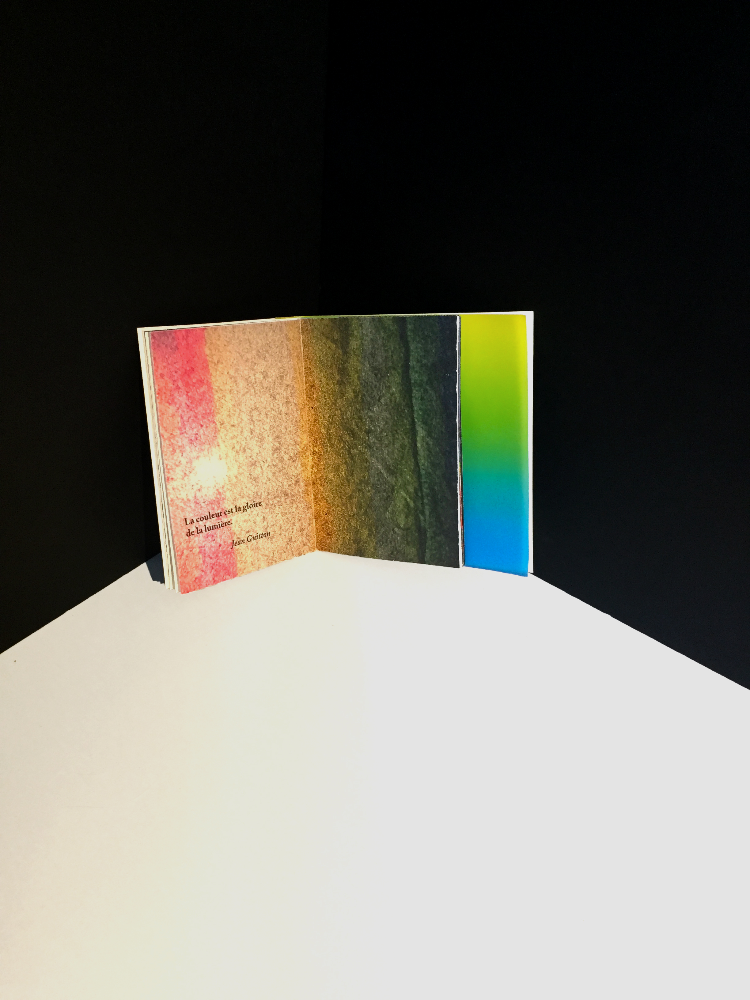
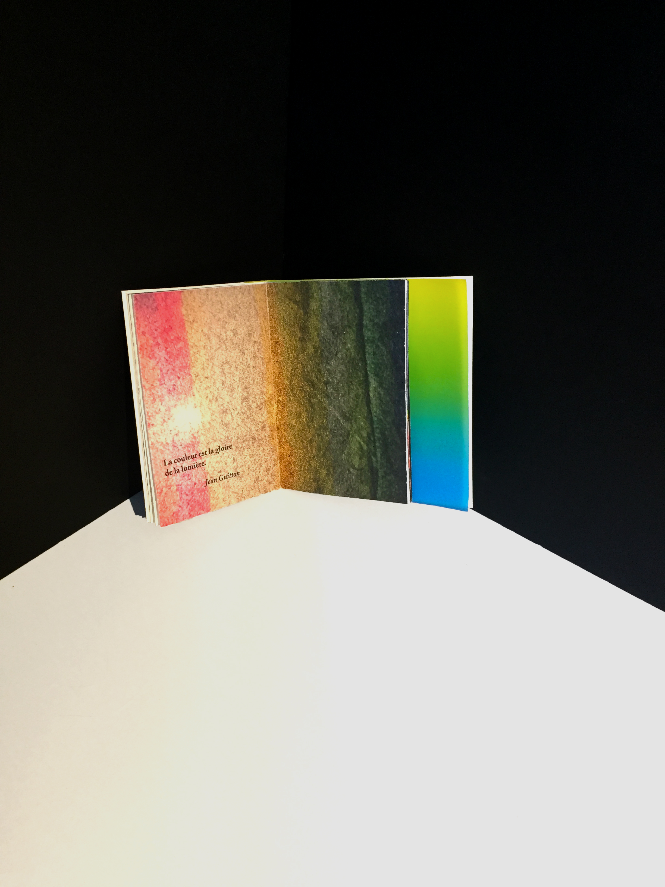

À l'occasion d'un lieu culturel d'exposition et de médiation pour la Maison des Mathématiques, j'ai réalisé des couvertures de cahiers d’exercice à l’aide de signes mathématiques visant les 6-8 ans. Ces couvertures se doivent d'être ludiques au regard de leur cible.
Partons d'une collection. Quoi de mieux pour exprimer l'esprit de famille?
Je suis parti d'une collection de Promarkeur de la marque Winsor et Newton. Les markeurs laisse une trace dans le temps et nous permettent de laisser exprimer notre créativité haute en couleurs.
Après avoir réalisé des visuels, j'ai conçu une micro-édition faisant honneur aux couleurs.
Le magazine ELLE et les éditions Gallimard ont collaboré afin de rendre hommage à ces femmes qui ont lutter pour défendres leurs idées. J'ai conçu les couvertures des ouvrages issus de cette colaboration.
Les visuels de celles-ci mettent sur le devant de la scène ces femmes de poigne. Ces livres font partie de la collection Femmes d'Exception, il faut donc que l'esprit de collection soit visible par les principes graphiques mais aussi par les éléments textuels qui ne change pas comme les emplacements des logos.